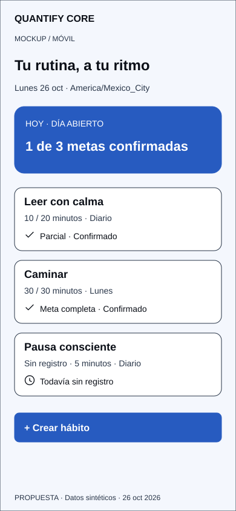

ESTUDIO DE INTERFAZ / 26 OCTUBRE 2026
Una rutina clara.
Un sistema coherente.
Del primer trazo a la interfaz: explora la estructura, la jerarquía y los estados de Quantify Core.
Propuesta de diseño · Datos sintéticos · QUANCORE-26

INTENCIÓN Y COMPORTAMIENTO
Continuar el recorrido
No se simula autorización real. El servidor deberá validar identidad, pertenencia y revisión.
Leer matriz de requisitos y estados ↗Un lenguaje visual compartido.
Laser Blue, tipografía del sistema, iconos con etiqueta y estados que se entienden con palabras.
Abrir paleta, tipografía e identidad →